Modular People
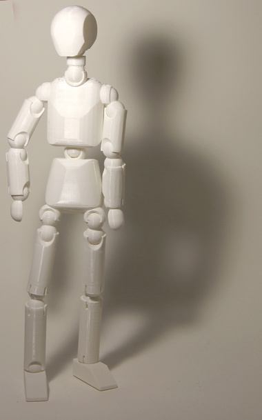
Modular, jointed, people coded through OpenSCAD and printed through the MakerBot Replicator 2. This is a customization construction kit with changeable limb lengths, body width, and height. All the joints are the same size which allows construction of non humanoid entities and varying structures. All forms are constructed through additive and subtractive geometric shapes to form a human-like figure.
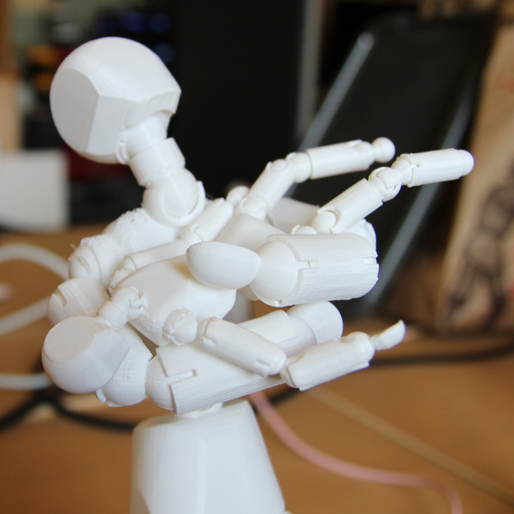
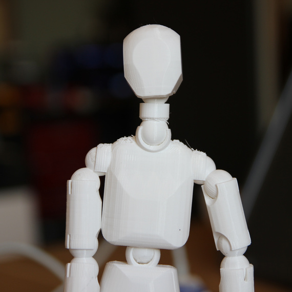
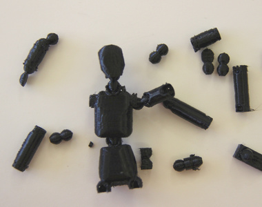
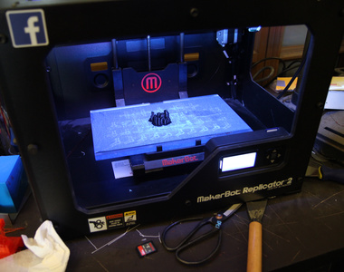
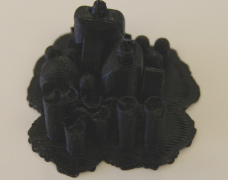
Process
I started off by prototyping a ball and socket joint. I went through a few different 3d printing tests until I found a desgin that really worked for me: The end socket covers over 50% of the ball, but has slits cut out of it to allow it to expand when being fitted. It also has a cut out of a shpere which allows joints to be rotated to almost 90 degrees. This allows the use of a double joint (used in the elbows, shoulders, knees, and hips) to achieve more realistic movability.
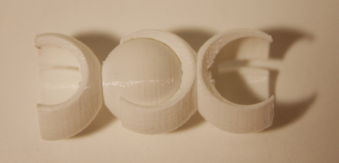
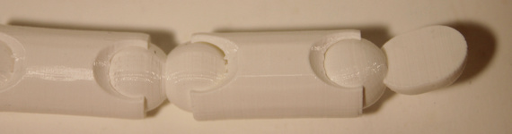
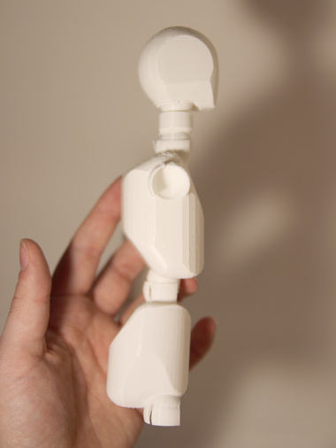
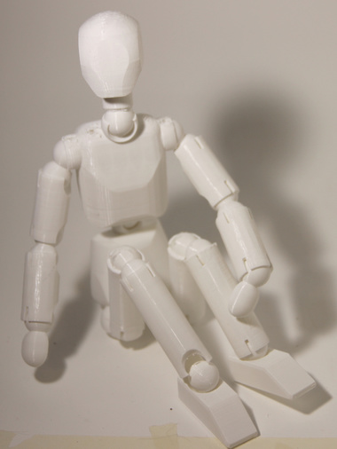
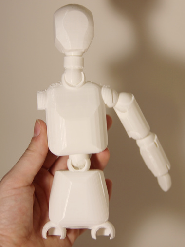
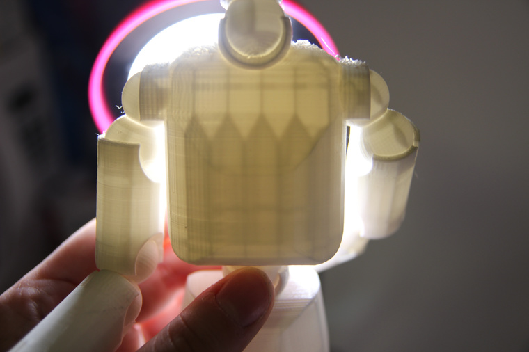
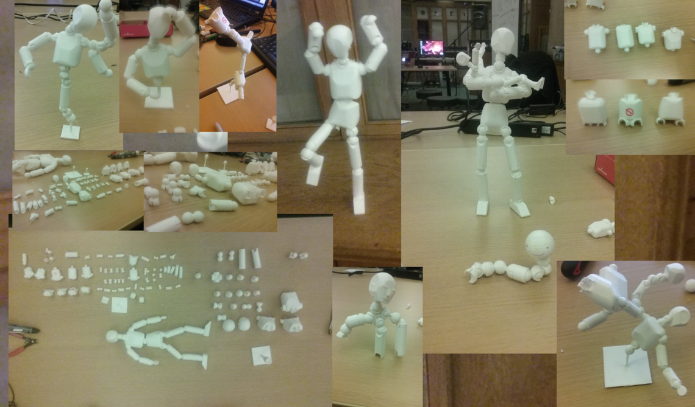
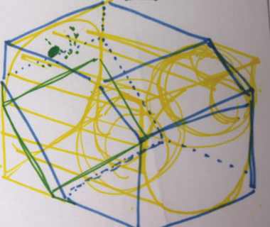
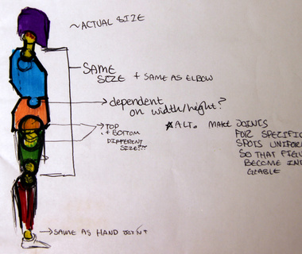
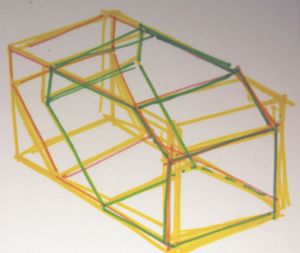
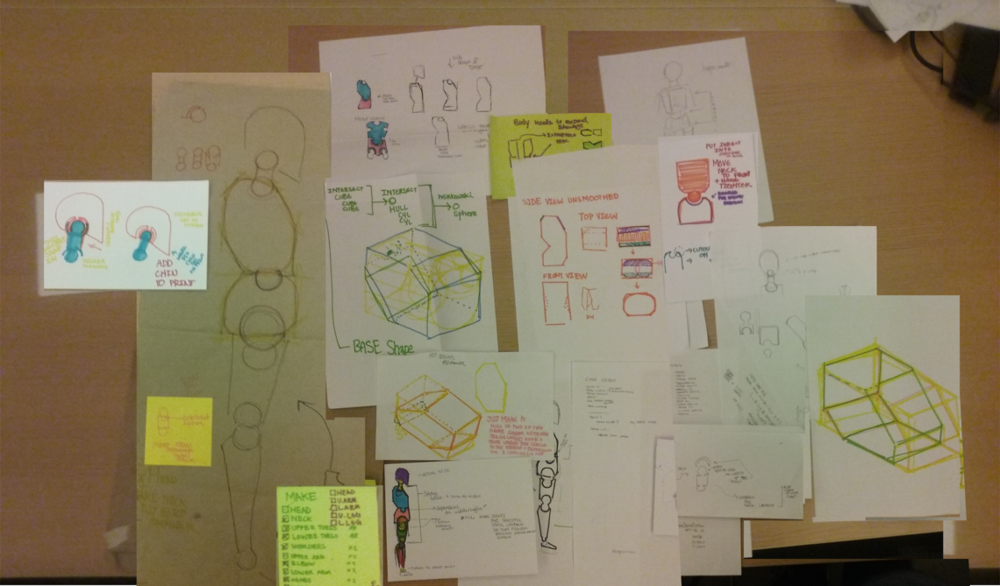